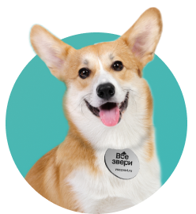
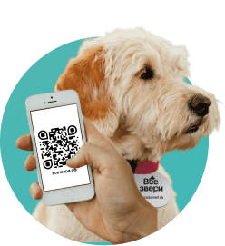
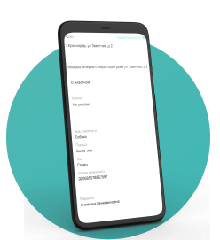
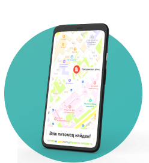
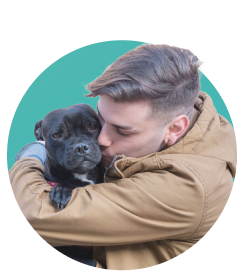

Простое решение для безопасности вашего питомца — брелок «Все звери» с QR-кодом
По самым оптимистичным данным в России теряются до 1000 животных в день. 80% животных не
возвращаются домой.
Чтобы увеличить шансы возвращения животного — прикрепите на ошейник брелок с QR-кодом. Его могут
отсканировать не только ветеринары и службы по отлову, а любой человек со смартфоном.
-
Мгновенный доступ к информации:
любой человек, нашедший вашего питомца, сможет получить всю необходимую информацию для связи с вами, просто отсканировав QR-код смартфоном
-
Уведомление о местоположении:
при сканировании кода владелец получает уведомление с информацией о месте, где нашли питомца
-
Удобство и безопасность:
адресник легко прикрепляется к ошейнику и совершенно безопасен для животного
Больше никаких заблудившихся питомцев:
QR-адресник исключает риск, что ваш пушистый друг будет потерян, не сможет вернуться домой или попадет в приют. Вся информация о питомце и его владельце будет доступна любому, кто найдет его.
К тому же, не стоит забывать и о более печальном сценарии - потерянный питомец может столкнуться с опасностями, которые могут угрожать его жизни. QR-адресник снижает риск такого исхода, обеспечивая вашему питомцу больше шансов быстро вернуться домой.
-

ШАГ 1
Прикрепление QR-адресника
Прикрепите QR-адресник к ошейнику вашего питомца
-
ШАГ 2
Регистрация QR-адресника
Зарегистрируйте ваш QR-адресник на нашем сайте, указав все необходимые данные.
-

ШАГ 3
Питомец потерялся
Если ваш питомец потерялся, нашедший может отсканировать QR-код
-

ШАГ 4
Получение информации о питомце
После сканирования QR-кода нашедший получает всю информацию о питомце и его владельце.
-

ШАГ 5
Уведомление владельцу
Владелец получает уведомление о местоположении питомца сразу после сканирования QR-кода.
-

ШАГ 6
Возвращение питомца домой
Ваш питомец возвращается домой благодаря информации из QR-кода
Не оставляйте безопасность вашего питомца на волю случая
QR-адресник — это надежный способ заботы о своем пушистом друге.
Заказать QR-адресникКОНТАКТЫ
Мы всегда готовы помочь Вам в настройке вашего персонального брелка «Все звери» с QR-кодом